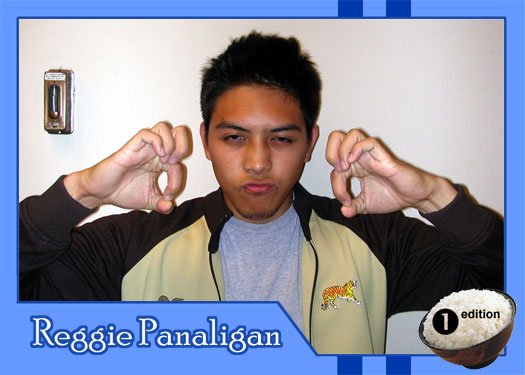

|
Why did you get involved with Theatre Rice? I got involved mainly because I needed a club to join. I guess I was tired of going home after class and staring at a blank wall. What do you hope to gain from TR? Well, in Econ, TR typically stands for Transfer Payments. Transfer Payments are not included in Government Expenditure, so if I was GDP, I couldn't gain anything from TR. Who are your role models? Justin Timberlake, Steven Stifler, and Jesus What are your favorite films or t.v. shows? Real World, Saturday Night Live, Celebrities Uncensored, Masayang Tanghali Bayan, anything on the Filipino Channel If you had a quote that defines how you live life, what would it be? "Don't Stop...Get It Get It" -Lil' Kim, the Queen Bee |